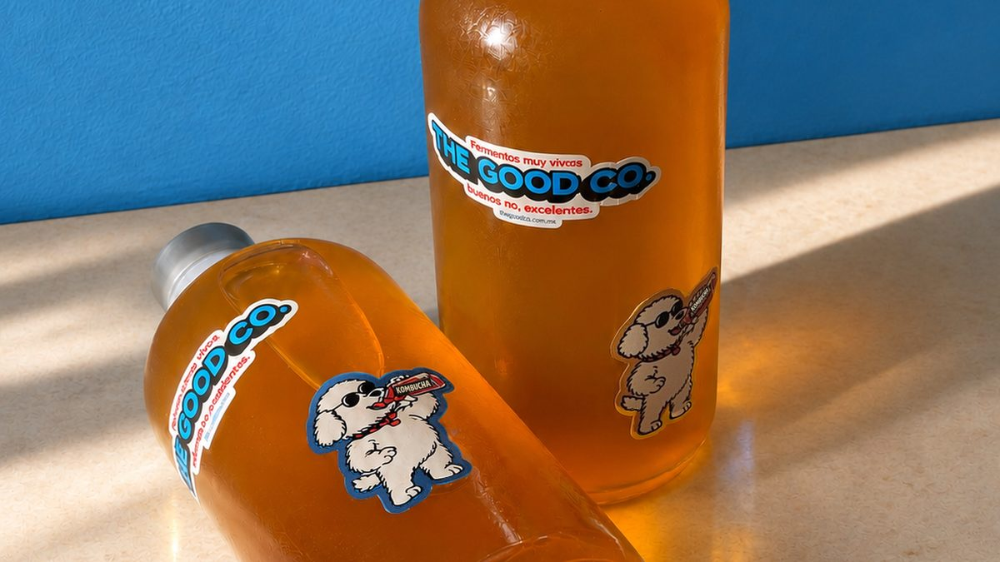
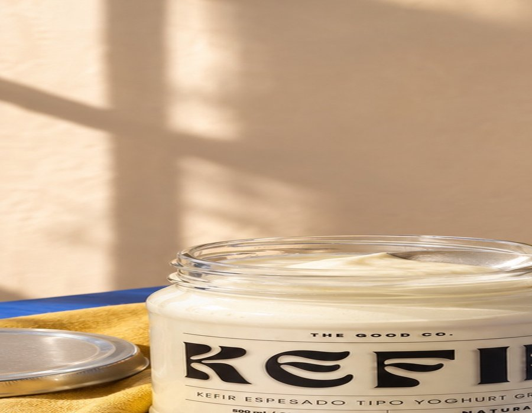
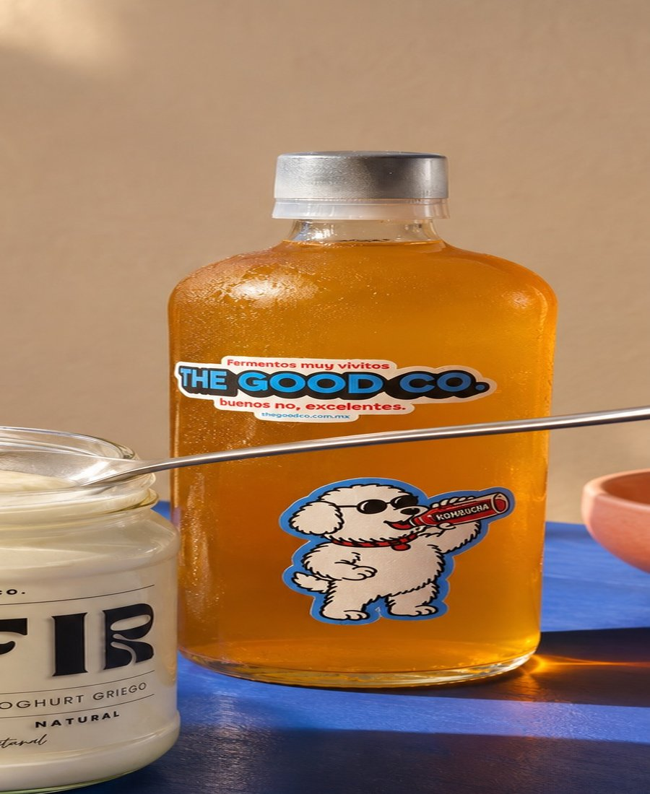
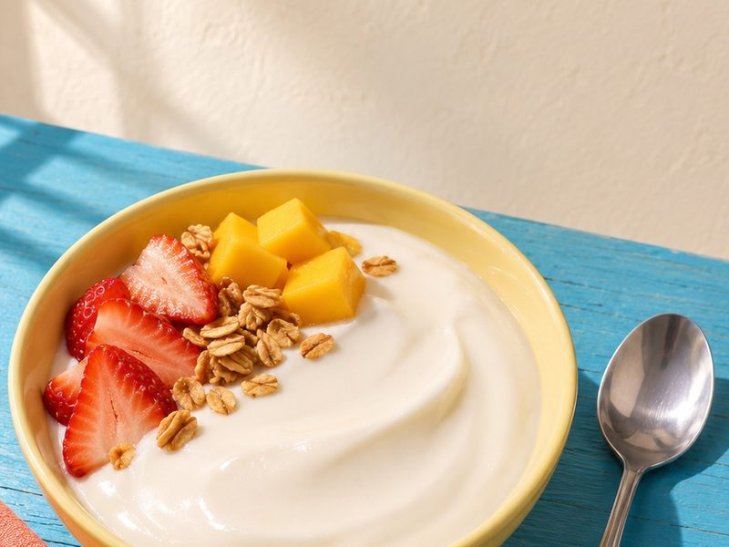
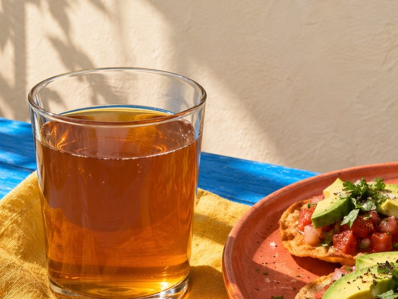
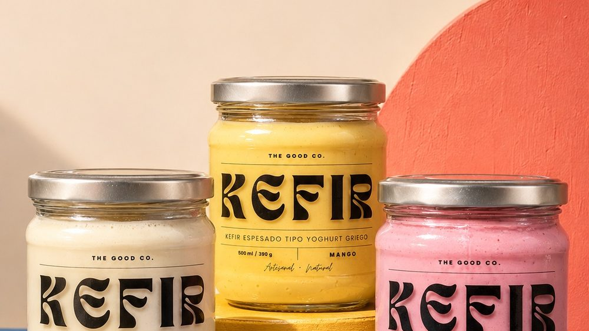

THE GOOD CO.
Infografía · Fermentos vivos
Chihuahua, México
@co.thegood
@co.thegood
Probióticos, kéfir y kombucha… sin dormirte en la explicación
Qué son
Beneficios
Con qué combinarlos
1
¿Qué son los probióticos?
Bichitos buenos vivos. Así de simple. ISAPP, 2014
Vivos
Llegan activos. Sin pasteurizar a muerte.
En cantidad
No basta “un poquito simbólico”.
Con evidencia
Beneficio documentado, no solo vibes. ISAPP, 2021
2
Kéfir y kombucha: qué puedes notar
Ciencia con los pies en la tierra — sin milagros de Instagram.

Kéfir
Más diversidad intestinal
Dieta fermentada ↑ microbioma. Stanford / Cell, 2021
Menos señales de inflamación
Bajaron varias proteínas, incl. IL-6. Stanford, 2021
Digestión con más evidencia
Uno de los fermentos más estudiados. King’s College, 2019

Kombucha
Parte del pack fermentado
También sumó diversidad en Stanford. Cell, 2021
Apoyo digestivo emergente
Indicios en síntomas GI. Revisión, 2025
Aún se investiga más
Menos ensayos que el kéfir. No es medicamento. ISAPP, 2021
3
Combínalos y súmale potencia
Fermento vivo + fibra de plantas = mejor compañía. ISAPP, 2017 · 2020
Fermento vivo
Kéfir o kombucha
Fibra / prebiótico
Comida para tus bichitos
Equipo completo
Idea tipo sinbiótico

Desayuno
Kéfir + avena + plátano

Comida
Kombucha + verduras

Entre horas
Kéfir + granola + fruta
Tarde
Kombucha bien fría
4
Despensa amiga
Alimentos con fibra tipo prebiótico para acompañarlos. ISAPP guía
Plátano
Avena
Manzana
Cebolla / ajo
Hojas verdes
Legumbres